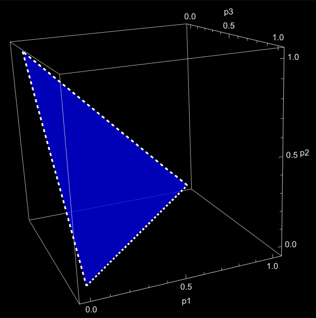

The $k$-Simplex and the Geometry of Probability
Motivation
What does it mean for probabilities to "live in a space"?
If we take all possible probability distributions on $k+1$ outcomes, we get a geometric object called the k-simplex.
The k-Simplex
The k-simplex is defined as
$$ \Delta^k = \{ (x_0, \dots, x_k) \in \mathbb{R}^{k+1} \mid x_i \ge 0,\ \sum_{i=0}^k x_i = 1 \}. $$
This is a subset of $\mathbb{R}^{k+1}$, but it is actually k-dimensional.
The Probability Simplex
We can interpret $\Delta^k$ as the space of all probability distributions on k+1 outcomes.
- Each coordinate represents a probability
- The sum-to-one condition constrains the space
- Non-negativity restricts us to a bounded region
This makes the simplex a natural object in:
- probability theory
- statistics
- information geometry
The Case k = 2
When k = 2, the simplex consists of triples $(x, y, z)$ such that
$x + y + z = 1, \quad x, y, z \ge 0$.
This forms a triangle in $\mathbb{R}^3$.
Visualization

Geometric Insight
Although the simplex sits in $\mathbb{R}^{k+1}$, it is actually a k-dimensional manifold (with boundary).
For example:
- $\Delta^1$ is a line segment
- $\Delta^2$ is a triangle
- $\Delta^3$ is a tetrahedron
Why This Matters
From a differential geometry perspective, $\Delta^k$ is a manifold with boundary embedded in $\mathbb{R}^{k+1}$. The interior, where all $x_i > 0$, is a smooth $k$-dimensional manifold, while the boundary corresponds to distributions where one or more probabilities vanish.
This matters because many tools from differential geometry apply directly:
- We can define tangent spaces at interior points as vectors whose coordinates sum to zero
- Paths in the simplex correspond to continuous changes in probability distributions
The equation $\sum_{i=0}^k x_i = 1$ cuts out a surface, and the inequalities keep us inside a bounded region.
So instead of thinking of probability distributions as abstract lists of numbers, we can think of them as points moving around in a geometric space.
Tangent Spaces
At a point $p \in \Delta^k$, the tangent space consists of vectors $v$ such that $\sum_{i=0}^k v_i = 0$.
This reflects the idea that any movement inside the simplex must preserve total probability.
Boundary Geometry
Each face is itself a simplex:
- Setting $x_i = 0$ gives a $(k-1)$-simplex
- These faces intersect along lower-dimensional simplices
So the simplex is a nice example of a geometric object built out of pieces of different dimensions.
The Hypervolume of the Simplex
One of the nicest geometric facts about the simplex is that we can compute its volume both as a subset of $\mathbb{R}^{k+1}$ and as its "flattened out" version in $\mathbb{R}^k$
At first glance, this is a little confusing. The simplex $\Delta^k$ lives inside $\mathbb{R}^{k+1}$, but it is only k-dimensional.
Flattening the Simplex
To compute this volume, we rewrite the simplex in terms of independent coordinates.
Starting with $\Delta^k = \{(x_0,\dots,x_k) \mid x_i \ge 0,\ \sum_{i=0}^k x_i = 1\}$, we solve for one variable: $x_0 = 1 - \sum_{i=1}^k x_i$.
This gives a parametrization: $\phi(x_1,\dots,x_k) = \left(1 - \sum_{i=1}^k x_i,\ x_1,\dots,x_k\right)$,
with domain $x_i \ge 0, \quad \sum_{i=1}^k x_i \le 1$.
Geometrically, this “flattens” the simplex onto a region in $\mathbb{R}^k$.
The Differential Geometry View
Now we compute volume the same way we would for a surface: using the induced metric.
The tangent vectors are $\frac{\partial \phi}{\partial x_i} = (-1, 0, \dots, 1, \dots, 0)$, where the 1 appears in the $i$-th coordinate.
Taking dot products gives the matrix of the first fundamental form: $g_{ij} = \left\langle \frac{\partial \phi}{\partial x_i}, \frac{\partial \phi}{\partial x_j} \right\rangle$.
A quick computation shows:
- $g_{ii} = 2$
- $g_{ij} = 1$ for $i \ne j$
So the metric matrix is \[ \begin{pmatrix} 2 & 1 & 1 & \cdots \\ 1 & 2 & 1 & \cdots \\ 1 & 1 & 2 & \cdots \\ \vdots & \vdots & \vdots & \ddots \end{pmatrix} \]
This matrix has a special structure, and its determinant turns out to be $\det(g) = k+1$, a constant in terms of the dimensionality.
So the volume element is
$\sqrt{\det(g)} = \sqrt{k+1}$.
Integrating the Volume
We now integrate over the region $\{x_i \ge 0,\ \sum x_i \le 1\}$.
A standard result from multivariable calculus is that
$$\int_{\sum x_i \le 1, x_i \ge 0} 1 \, dx_1 \cdots dx_k = \frac{1}{k!}.$$
Putting everything together,
$$\text{Vol}(\Delta^k)= \int \sqrt{\det(g)} \, dx = \sqrt{k+1} \cdot \frac{1}{k!}.$$
The Extrinsic Volume
You might have seen the formula
$\mathrm{Vol} = \frac{1}{k!}$ before. This refers to a slightly different viewpoint.
- The region $\{x_i \ge 0,\ \sum x_i \le 1\} \subset \mathbb{R}^k$ has volume $\frac{1}{k!}$
- The actual simplex sitting inside $\mathbb{R}^{k+1}$ has volume $\frac{\sqrt{k+1}}{k!}$
The difference comes from geometry: the simplex is “tilted” inside $\mathbb{R}^{k+1}$, and the factor $\sqrt{\det(g)}$ corrects for that distortion.
Conclusion
The k-simplex gives a geometric home to probability distributions.
Instead of viewing probabilities as just numbers, we can think of them as points in a structured geometric space.
In the end, the simplex is not just a combinatorial object, it is a concrete example of how geometry, calculus, and linear algebra all come together.